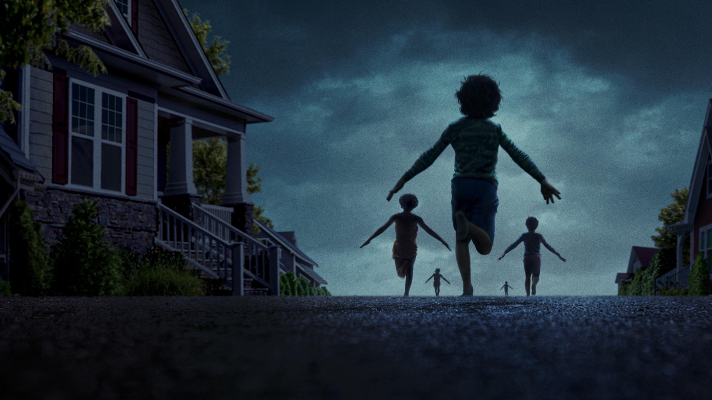
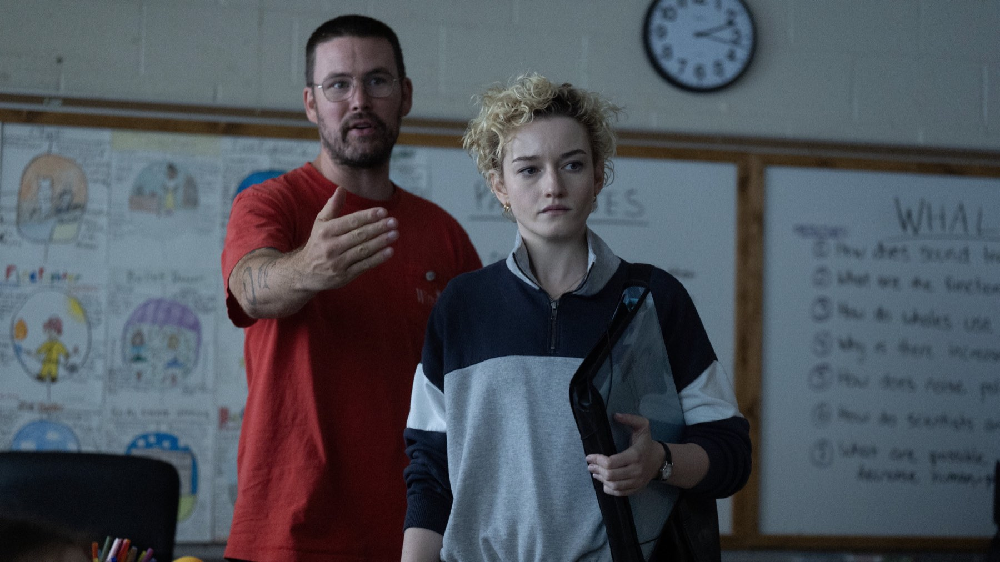
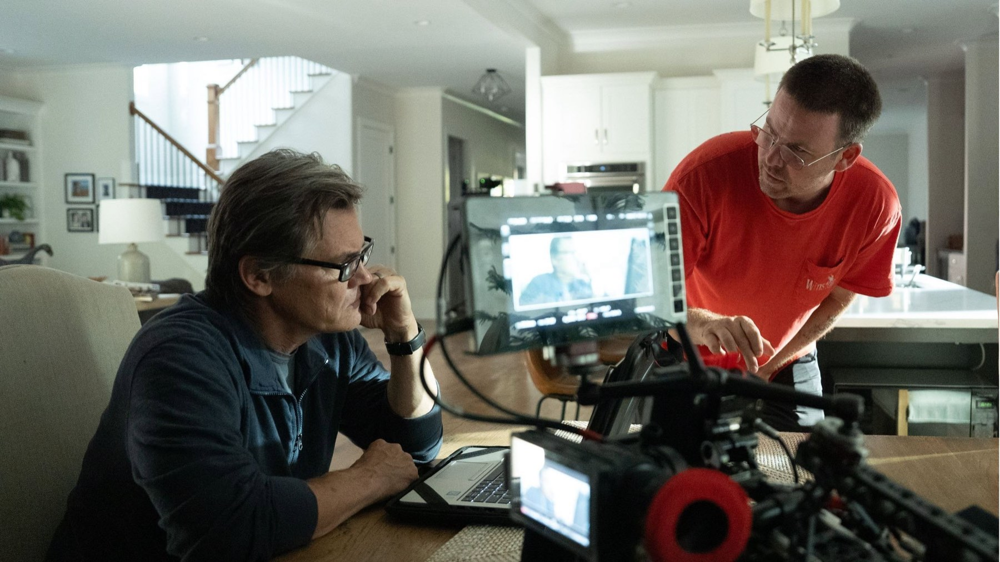

Weapons
Diciassette bambini spariscono nella stessa notte: l'autore di Barbarian costruisce un mosaico di punti di vista che fa paura, fa ridere e non molla mai la presa
Weapons vale la visione perché prende una paura da cronaca nera, i bambini che spariscono, e la racconta come un puzzle a incastro in cui ogni capitolo ribalta il senso del precedente. Il rischio, per noi, è che il puzzle prenda il posto della paura. Nelle sale italiane Zach Cregger, l'autore di Barbarian, è arrivato il 6 agosto 2025 con Warner Bros. e per quasi tutto il film il rischio lo evita: spaventa davvero e fa ridere nei momenti in cui non te l'aspetti.
Di cosa parla Weapons?
In una tranquilla cittadina della Pennsylvania, una notte, diciassette bambini della stessa classe si alzano dal letto, escono di casa e spariscono nel buio. Ne resta soltanto uno. I sospetti della città si concentrano subito sulla loro maestra, Justine Gandy, interpretata da Julia Garner, mentre il padre di uno dei bambini, Archer Graff di Josh Brolin, decide di indagare da solo.
La forza del film sta nella struttura: il racconto è diviso in capitoli, ognuno dedicato a un personaggio diverso, e gli stessi eventi vengono rivisti da angolazioni nuove. Oltre a Garner e Brolin ci sono Alden Ehrenreich nei panni di un poliziotto, Austin Abrams in quelli di un giovane senzatetto, Benedict Wong e Amy Madigan in un ruolo che non anticipiamo.

Perché funziona
Il trucco è che gli adulti non sanno niente più di noi, perché ognuno vede un pezzo e lo scambia per tutto: la maestra accusata dalla città, il padre che indaga da solo, il poliziotto. Quando un capitolo ci riporta nella stessa notte da un'altra angolazione, il dettaglio che sembrava neutro cambia peso. Il tema vero, però, è il vuoto che una scomparsa scava in chi resta, e la fretta di cercare un colpevole prima di aver capito. Chi cerca lo stesso equilibrio tra ironia e paura può proseguire con Obsession, l'horror di Curry Barker uscito nel 2026.
La scena che vale il film
È la sequenza d'apertura: di notte, nelle strade di una cittadina di provincia, i diciassette bambini escono di casa e corrono via, mentre in sottofondo suona «Beware of Darkness» di George Harrison. La canzone è dolce, quasi una ninna nanna, e proprio per questo la scena gela: il contrasto tra ciò che si vede e ciò che si sente dice allo spettatore che qui la paura non arriverà dai rumori forti. È una dimostrazione di bravura che MYmovies sottolinea a ragione. Per noi è il momento in cui il film dichiara le sue regole, perché da lì in poi l'inquietudine nasce sempre dal contrasto.
Il confronto che viene spontaneo è con Barbarian. Là la svolta arrivava a metà film e spostava il racconto in un altro luogo e su altri personaggi; qui la svolta è la forma stessa, perché ogni capitolo riapre la stessa notte con un protagonista diverso. Là bastava una cantina, qui serve un'intera città. Dei film corali a mosaico, da Magnolia a Elephant di Gus Van Sant, Weapons prende il girare intorno a un evento con sguardi diversi, ma lo porta sul terreno della fiaba nera: il Pifferaio di Hamelin è l'immagine che a noi non è più uscita di testa.

Il fatto che cambia come lo guardi
Le riprese si sono svolte tra maggio e luglio 2024 nell'area di Atlanta, dopo uno slittamento causato dagli scioperi di Hollywood del 2023. Nei giorni più affollati sul set c'erano fino a 170 bambini: il film ha bisogno di una scolaresca intera, e a coordinarla servivano anche addetti al lavoro minorile che tenevano occupati i piccoli attori tra un ciak e l'altro. Montaggio di Joe Murphy e fotografia di Larkin Seiple tengono insieme i capitoli con un ritmo che non lascia mai perdere il filo.
Le interpretazioni
Julia Garner è fragile e testarda come maestra sotto assedio: basta il suo atteggiamento in classe, con una città intera che la guarda come colpevole, per farci dubitare di lei e insieme tifare per lei. Josh Brolin dà al padre una rabbia trattenuta che fa male, soprattutto quando guarda i video di sorveglianza cercando un indizio. La sorpresa è Amy Madigan, il cui personaggio è destinato a diventare un'icona del genere.
Cosa non funziona
Il punto debole è che il film accumula inquietudine metafisica e poi la scioglie in una spiegazione concreta. Fornasiero salva quasi tutto ma dice che l'immagine del «mitra gigante in cielo», legata ai numeri della sveglia, è ciò che «funziona meno di tutto il film»: la troviamo troppo letterale accanto alla finezza dell'apertura. E chi ama i misteri lasciati aperti potrebbe trovare il finale troppo esplicito, anche se chi preferisce le risposte uscirà soddisfatto.
Una parte della critica americana ha letto nella struttura a capitoli un espediente per rimandare le risposte. Noi siamo meno severi: il rinvio fa parte del piacere del puzzle, a patto di accettare che non ogni capitolo abbia lo stesso peso.
Per chi è
Lo consigliamo a chi ha amato Barbarian e vuole un horror da vedere in compagnia, perché poi se ne parla per ore. Lo sconsigliamo a chi non sopporta i bambini in pericolo sullo schermo, e anche a chi cerca un incubo ermetico: Weapons le risposte, alla fine, le dà.
Il successo e dove vederlo
Tutti i numeri in un posto solo. Costato 38 milioni di dollari, Weapons ne ha incassati circa 270 nel pianeta intero a ottobre 2026: 151,6 milioni negli Stati Uniti e in Canada e 118,4 milioni altrove, dopo un debutto da 43,5 milioni nel primo fine settimana. Sempre a ottobre 2026 ha il 93% di giudizi favorevoli su Rotten Tomatoes (400 recensioni) e 81 su Metacritic. A marzo 2026 Amy Madigan ha conquistato l'Oscar come miglior attrice non protagonista, alla prima candidatura dal 1986, il più lungo intervallo tra due nomination per un'interpretazione nella storia del premio; si era già aggiudicata il Critics' Choice e il premio del sindacato attori.
Il film è uscito in versione digitale a noleggio negli Stati Uniti il 9 settembre 2025 e su HBO Max americana il 24 ottobre 2025. In Italia è disponibile in abbonamento su HBO Max e a noleggio sulle principali piattaforme digitali. Per il futuro è annunciato un prequel, Gladys, previsto per l'8 settembre 2028.
Weapons ti fa dubitare di tutti e ti tiene incollato anche quando spiega troppo: l'horror più furbo e più divertente del 2025.
Domande frequenti
Di cosa parla Weapons?
In una cittadina della Pennsylvania diciassette bambini della stessa classe escono di casa nella stessa notte e spariscono: solo uno resta. Il film ricostruisce il mistero attraverso i punti di vista di diversi adulti coinvolti.
Dove vedere Weapons in streaming?
In Italia è disponibile in abbonamento su HBO Max e a noleggio sulle principali piattaforme digitali.
Weapons ha vinto premi?
Sì: a marzo 2026 Amy Madigan ha conquistato l'Oscar come miglior attrice non protagonista. Ha ottenuto anche lo SAG Award e il Critics' Choice per la stessa categoria.